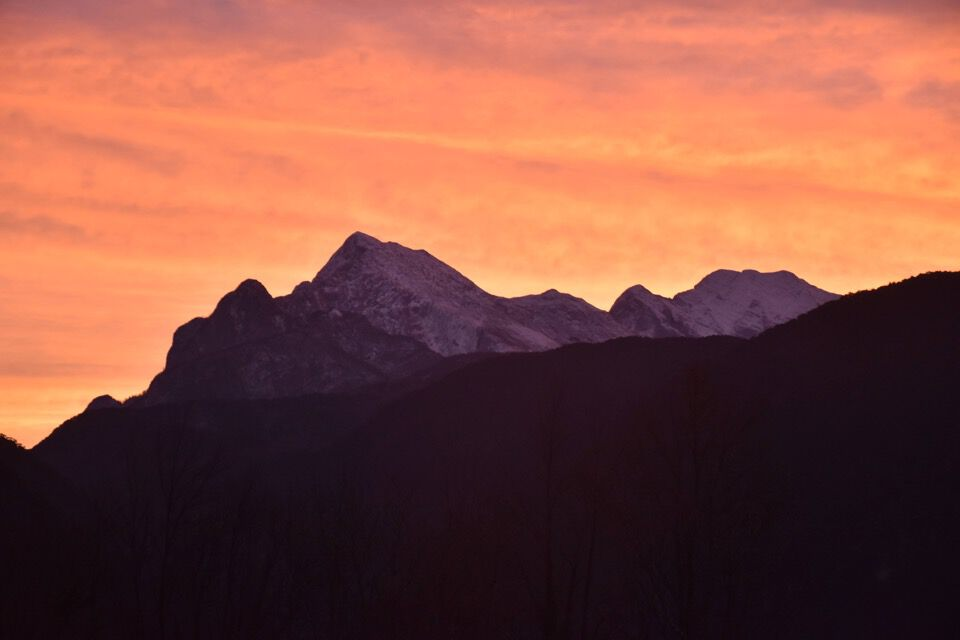
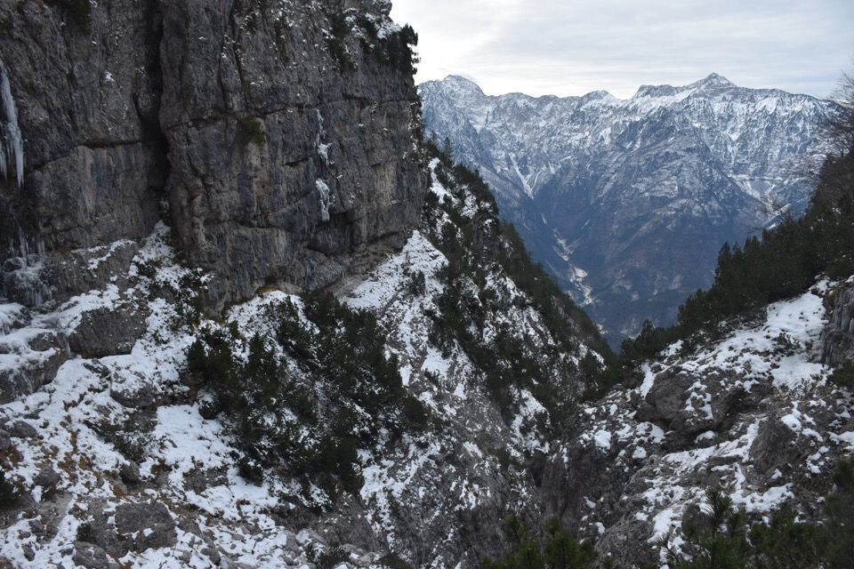
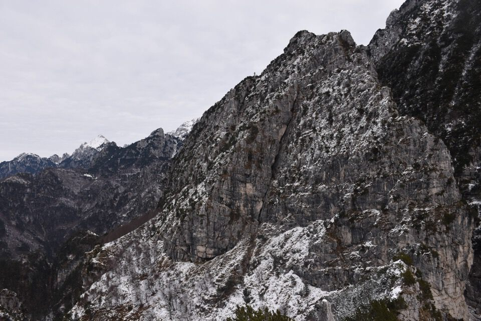
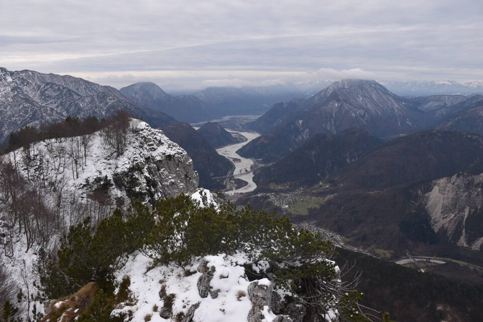
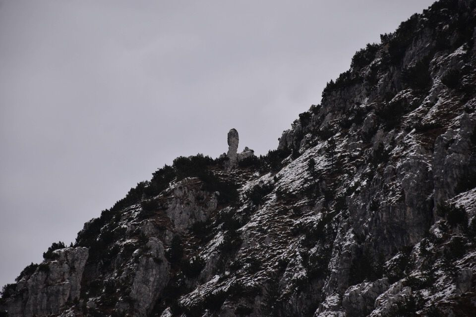
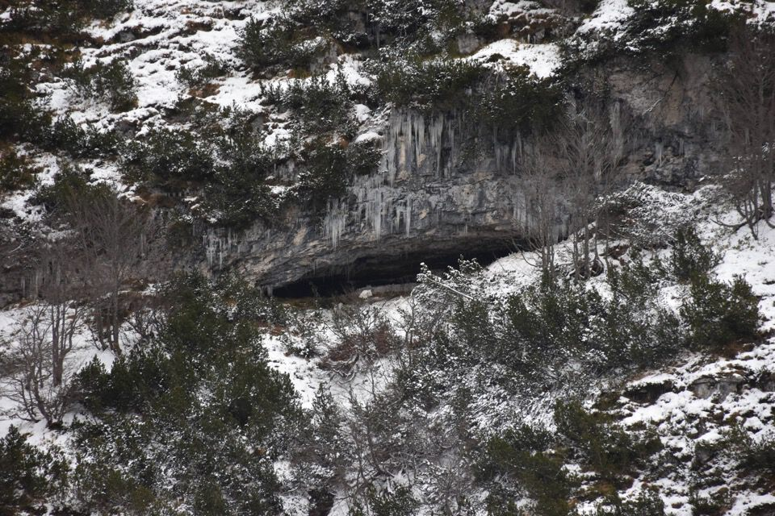
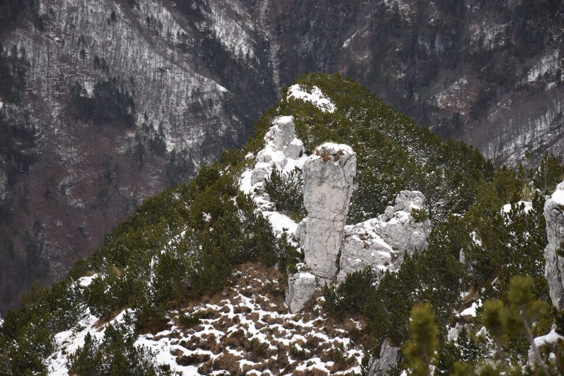
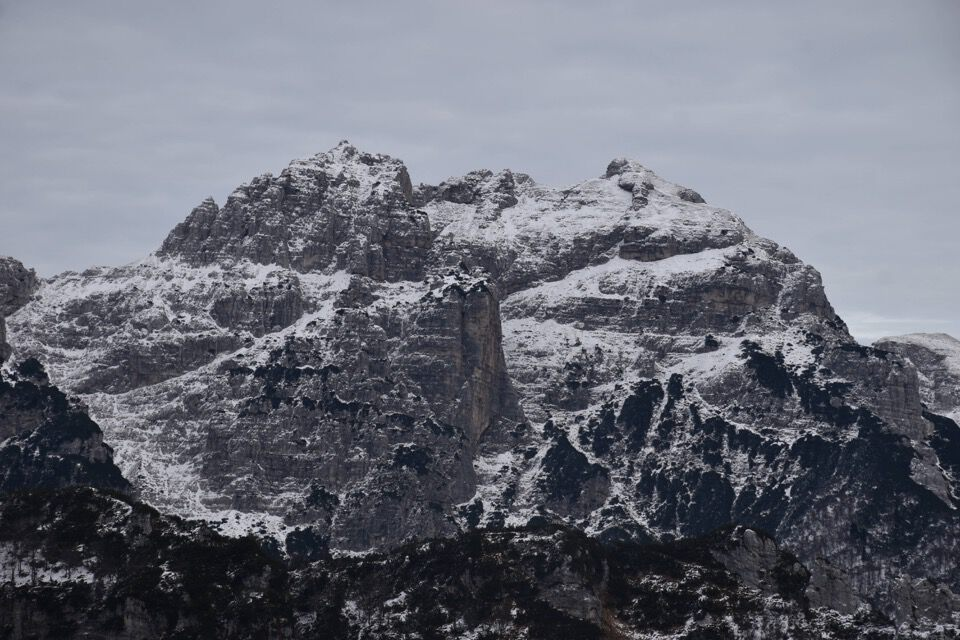

A forza di avere il Pisimoni sempre davanti durante le mie salite nei monti di Resiutta, mi era venuta voglia di esplorarne i contrafforti che danno su Muéç; unendo varie informazioni che avevo a disposizione, assieme alle molte foto fatte alla parte terminale del rio di Place, ho ideato un percorso e così un giorno di dicembre sono andato a vedere.
All'alba verso Resiutta e il Plauris; sopra la chiesetta, il caotico complesso del Palòn dei Zábus.
La mia macchina fotografica ha dato un po' di matto con i colori...
Che spettacolo l'alba sul Sart, dal ponte di Moggio.
Percorro il sentiero CAI 423 fino ad incontrare l'inizio meridionale della Cengle Alte.
A dire la verità ho iniziato a preoccuparmi quando, intorno ai 900m di quota dello stavolo Uèrc, ho cominciato a pestar neve! Qua la cima la vedo solo col binocolo, e forse anche la cengia...
Dalle foto a distanza sospettavo un passaggio su cengia fra il Plan Austìn e il quadrivio di intersezione fra il rio di Place e il troi della Cengle Alte (vedi); ho verificato che questo è possibile.
Il pezzo più bello del tratto di Cengle Alta fra il rio Uèrc e il 423.
Uno sguardo all'indietro: fra ghiaccio vivo e stalattiti pronte a cadere, attraversare i colatoi sulla cengia mi ha fatto tribolare!
Ma eccomi alla forcella fra il Cuèl di Sôre e il Ciùc da la Muìnie, sul versante val Tralba; si intravede la continuazione della Cengle Alte.
Alla sella fra le q1400 e q1412 del Cuèl di Sôre trovo un manufatto di cacciatori.
Non capisco bene quale sia la vera cima fra le diverse quote che intravedo dal bosco, mi complico la vita ma riesco a salire sulla quota principale.
Verso il Cuèl da le Fratte, con a dx lo spiazzo imbiancanto di casera Cròstis. Lì sotto, sui cenglòns, passa il bellissimo troi di collegamento fra lo stavolo Roseàn e casera Cròstis.
L'elegante spigolo Sud del Ciùc da la Muìnie; turbamenti interiori mi rendono indeciso se salire anche lì oppure tornare già indietro...
La cima a sx è la q1400, più bassa ma molto più evidente dal fondovalle (se torni all'inizio della pagina, la foto al tramonto ritrae proprio questa anticima).
Vedo benissimo la Muìnie!
Scruto l'alto versante Ovest del Pisimoni; ad esser sincero l'idea di partenza era di tornare indietro per quel cengione che si intravede a metà foto, su cui c'è pure un clapusç (di cui ignoravo l'esistenza), per raggiungere l'enorme clapusç che si vede pure dal paese di Moggio (qualcuno conosce ne il nome popolare?) - facilmente raggiungibile dal CAI 423 per bella cengia. Avevo però sopravvalutato lo scoglimento della neve: effettivamente va ben che non nevicava da un pezzo, ma siamo pur sempre a dicembre a quota 1500 in versante Ovest!
Inoltre, salendo, appena dopo gli stavoli Uèrc, mi ero imbattuto in un bivio pressoché invisibile, ma dando giusto un'occhiata che non si sa mai, mi ero accorto che la c'era un bollo blu! Così ho fatto "uno più uno" e ho capito subito: si doveva trattare di un sentiero di collegamento fra lo stavolo Uèrc e il Plan Austìn. Ero talmente galvanizzato dalla «scoperta» che volevo scendere per la stessa strada per poi percorrere quel sentiero.
La giornata uggiosa mi regala alcune bellissime fotografie: qui i Musi.
Ecco il primo clapusç...
...e il secondo più grande. Non vedo l'ora di andare a visitarli! Mi attirano più di qualunque cima.
Ritorno nel rio di Place.
Dicevo che ero indeciso se salire anche sul Ciùc da la Muìnie... beh diamo un occhio al canalone terminale del rio di Place almeno, o aspetta che vedo ancora un po' più su... si sa già come va.
Arrivo sulla forcelletta che fa capo al rio di Place, qui verso la val Tralba.
Chissà se si riesce a salire anche per il canale che sale da questo versante: le linee di livello sono comparabili con quelle del canale meridionale, ma c'è un salto alla fine, l'unico modo è andare là e vedere se c'è un modo trasversale per aggirarlo.

Per salire in cima al Ciùc da la Muìnie c'è pure un antico sentiero tagliato fra i mughi, ora da migliorare.

Il panorama è davvero bello; con la «prua» dell'antecima Sud del Cuèl di Sôre lì sotto, mi pare di essere su un'enorme nave sopra Moggio.

Verso Resiutta e l'amata Povici.
La parte terminale del versante Ovest del Pisimoni; ma lo sapete che lì sotto passa un'altra cengia tutta tagliata fra i mughi?
La Muìnie molto da vicino... volendo ci si arriva facilmente alla base.
Il sempre affascinante Cozarèl; la poca neve mette bene in risalto i particolari della montagna, e mi permette finalmente di vedere i canali che permettono di accedere alla Cozarèl Alt.
Per la discesa rimando alla prossima puntata.